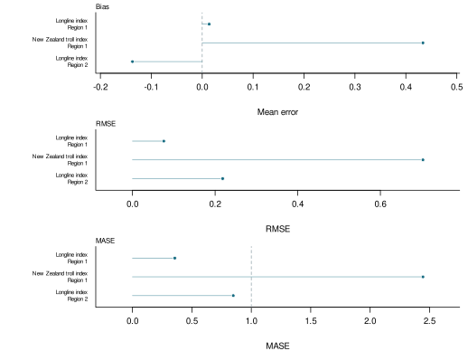

South Pacific albacore 2024: KIMSA assessment
This demonstration rebuilds the South Pacific albacore 2024 assessment with KIMSA. It combines one diagnostic fit, eight cumulative full-workflow model-development fits, 100 independently refitted ensemble members, 30 starting-value trials, 20 simulation-estimation refits, five retrospective peels, five one-year index hindcasts, an average-adult-biomass likelihood profile and 5,000 reference-catch projection paths. All supplied finite results are carried into the displays; recorded numerical checks remain available in the interactive outputs.
The fitted period ends in 2022 and projections cover 2023–2042. Management summaries use 2019–2022 for recent spawning quantities and 2018–2021 for recent fishing mortality.
The supplementary interactive viewer provides the detailed study, fitted-data and portable-result views from one entry page.
This report demonstrates a complete KIMSA assessment workflow for South Pacific albacore using the public 2024 assessment inputs. The analysis spans the stock from the equator to 50°S and retains the four-region assessment structure shown in Figure 1. The fitted time series ends in 2022.
The diagnostic fit, model-development sequence, Monte Carlo ensemble, robustness studies and projections are connected through portable KIMSA result contracts. The public Pacific Community repositories were used as read-only sources; this demonstration does not modify or replace the official assessment.
The 2024 assessment builds on the spatial structure used for the preceding South Pacific albacore assessment. WCPO regions are separated at 10°S and 25°S, and the eastern Pacific is represented as a fourth region. The model-development and ensemble inputs follow the 2024 assessment and its published ensemble archive (Pacific Community, 2024; Teears et al., 2024).
The purpose of this workflow is to keep each fitted model, diagnostic study, figure, table and report linked to its exact input and package revision. Model outputs are reported as supplied; the interactive viewer exposes the underlying series and fits.
Catch, abundance indices, length compositions, weight compositions and conditional age-at-length observations are carried from the assessment inputs into the diagnostic result. Table 1 records the fishery roles, regions, observation periods and units used by the model.
Abundance-index panels pair each observation with its fitted value, conditional uncertainty band and residual. Composition panels retain the original samples and their model predictions. Records are grouped only for display; the fitted model uses the complete observations provided to its doitall workflow.
The diagnostic model uses the four-region, age- and size-structured ALB 2024 inputs with the mfcl_no_tag KIMSA specification. Catch is conditioned through the hybrid-F solver with five passes and a maximum F of 6. Each independent model starts from its declared input and executes the complete phase 1–9 doitall sequence.
0.1 KIMSA assessment software
KIMSA (Kit for Integrated Modular Stock Assessment) is the RTMB-based engine used to assemble and fit the population, fishing and observation components in this analysis. RTMB supplies automatic differentiation and Laplace-approximation tools to the fitted model (Kristensen, 2026). kimsa.lab runs the stepwise, ensemble and diagnostic studies; kimsa.view turns their validated result tables into publication figures and one interactive viewer; and kimsa.report assembles those outputs into this editable manuscript. The report reads portable result contracts, so rendering does not require an MFCL executable or a live fit.
0.2 Stepwise development
Eight cumulative model configurations were each fitted through their complete declared doitall sequence. Colours identify configurations and all trajectories use solid lines. The four panels in Figure 6 show spawning depletion, aggregate fishing mortality, recruitment and spawning potential.
0.3 Model ensemble
The ensemble contains 100 member-specific official 2024 inputs. Each member was refitted independently with KIMSA before its derived quantities were combined.
Thirty phase-aware starting-value trials perturb eligible optimizer coordinates when they first become active and then finish the unchanged doitall. Their objective, gradient and trajectory results retain every finite refit and identify recorded check status separately.
Twenty simulation-estimation tests simulate the declared observation components from the diagnostic KIMSA fit and refit each generated data set through the full workflow. Figure 13 summarises relative recovery error for derived quantities and available key parameter blocks, while Figure 14 shows trajectory spread.
Five retrospective peels, five one-year-ahead index hindcasts and a two-arm likelihood profile examine time-series stability, prediction and objective support. In the hindcast panels, the dashed series is predicted using only data before each held-out year; closer tracking and points nearer the one-to-one line indicate better out-of-sample prediction. Bias near zero and smaller RMSE are preferred; MASE below one is reported only when a valid training-history naive scale is available. The profile starts at the diagnostic centre; lower and upper arms advance sequentially in 2.5% steps within each arm and run concurrently with each other.
0.4 Data fit
Observed abundance indices, fitted values, supplied log-scale uncertainty and standardised residuals are paired by index in Figure 7. Composition figures use the observation and prediction records carried by the diagnostic fit.
0.5 Population estimates
The diagnostic population trajectories are shown in Figure 20. Regional shares are calculated only where regional quantities sum to the supplied all-region value; they are not inferred from fishery labels.
0.6 Stock status
Terminal ensemble uncertainty is shown in Kobe and Majuro coordinates in Figure 27. Annual status in Figure 28 compares the diagnostic path with the year-specific median across all ensemble members. Individual member paths remain in the supplementary viewer. Management quantities and reference-point probabilities use the explicit periods stated in the summary and are reported in Table 2 and Table 3.
The reference-catch projection follows the 2024 assessment specification and spans 2023–2042. Each of 100 independently refitted ensemble members contributes 50 stochastic recruitment paths. Figure 30 joins compatible historical ensemble summaries to the projected period, marks the transition, shows 2.5%–97.5% intervals and overlays three coherent individual paths selected across the terminal depletion distribution. Regional and catch-attainment results remain in the portable result tables. Terminal quantities are listed in Table 5.
The diagnostic, stepwise and ensemble views answer different questions. The diagnostic shows one detailed fit, the cumulative stepwise sequence isolates reproducible model choices, and the independently refitted ensemble describes variation among the supplied 2024 model members. Median trajectories and central run ranges summarise the ensemble without hiding the member-level paths retained in the viewer.
Starting-value, simulation-estimation, retrospective, hindcast and likelihood-profile results should be read together. They expose optimisation sensitivity, recovery under the fitted model, time-series dependence, predictive behaviour and local objective shape. The projections are a 20-year workflow demonstration under the declared reference-catch scenario and carry model-member and stochastic recruitment variation forward.
The public assessment design and write-up were provided by the Pacific Community. All model fitting, diagnostic assembly, visualisation and report generation in this demonstration use the pinned KIMSA companion package revisions recorded with the outputs.
1 References
2 Tables
| Fishery | Fishery name | Region | Role | Years | Unit |
|---|---|---|---|---|---|
| 1 | LL.DWFN.1a | 1 | Catch | 1954–2022 | fish |
| 2 | LL.DWFN.1b | 1 | Catch | 1954–2022 | fish |
| 3 | LL.DWFN.1c | 1 | Catch | 1954–2022 | fish |
| 4 | LL.DWFN.1d | 1 | Catch | 1954–2022 | fish |
| 5 | LL.PICT.1ab | 1 | Catch | 1992–2022 | fish |
| 6 | LL.PICT.1cd | 1 | Catch | 1982–2022 | fish |
| 7 | LL.AZ.1abcd | 1 | Catch | 1987–2022 | fish |
| 8 | LL.DWFN.1ef | 1 | Catch | 1954–2022 | fish |
| 9 | LL.PICT.1ef | 1 | Catch | 1984–2022 | fish |
| 10 | LL.AZ.1ef | 1 | Catch | 1985–2022 | fish |
| 11 | TR.ALL.1e | 1 | Catch | 1982–2022 | t |
| 12 | TR.ALL.1f | 1 | Catch | 1987–2022 | t |
| 13 | DN.ALL.1ef | 1 | Catch | 1983–1990 | t |
| 14 | LL.EPO.2a | 2 | Catch | 1957–2022 | fish |
| 15 | LL.EPO.2b | 2 | Catch | 1961–2021 | fish |
| 16 | LL.EPO.2c | 2 | Catch | 1963–2021 | fish |
| 17 | TR.EPO.2abc | 2 | Catch | 1986–2006 | t |
| 18 | LL.INDEX.1abcd.1954-2022 | 1 | Index | 1954–2022 | relative |
| 19 | TR.INDEX.1ef.NZ-troll | 1 | Index | 1992–2022 | relative |
| 20 | LL.INDEX.2abc.1954-2022 | 2 | Index | 1954–2022 | relative |
| Quantity | Period | Unit | Mean | Median | Minimum | 10% | 90% | Maximum |
|---|---|---|---|---|---|---|---|---|
| Aggregate F | 2018–2021 | per year | 0.0728 | 0.0666 | 0.0222 | 0.0332 | 0.108 | 0.156 |
| Aggregate F | 2022 | per year | 0.0692 | 0.0619 | 0.0206 | 0.0314 | 0.104 | 0.151 |
| BMSY | Reference point | t | 785000 | 662000 | 330000 | 423000 | 1290000 | 2210000 |
| Dynamic unfished spawning potential | 2019–2022 | t | 678000 | 668000 | 601000 | 624000 | 748000 | 813000 |
| Dynamic unfished spawning potential | 2022 | t | 705000 | 690000 | 616000 | 651000 | 799000 | 901000 |
| \(F/F_{MSY}\) | 2018–2021 | ratio | 0.458 | 0.448 | 0.205 | 0.253 | 0.638 | 0.85 |
| \(F/F_{MSY}\) | 2022 | ratio | 0.435 | 0.429 | 0.189 | 0.232 | 0.613 | 0.818 |
| FMSY | Reference point | per year | 0.155 | 0.159 | 0.106 | 0.123 | 0.182 | 0.203 |
| MSY | Reference point | t/year | 115000 | 103000 | 62900 | 75100 | 177000 | 235000 |
| \(SB/SB_{F=0}\) | 2019–2022 | ratio | 0.513 | 0.512 | 0.274 | 0.39 | 0.668 | 0.742 |
| \(SB/SB_{F=0}\) | 2022 | ratio | 0.548 | 0.542 | 0.292 | 0.422 | 0.703 | 0.781 |
| \(SB/SB_{MSY}\) | 2019–2022 | ratio | 3.22 | 3.03 | 1.55 | 2.1 | 4.89 | 6.01 |
| \(SB/SB_{MSY}\) | 2022 | ratio | 3.58 | 3.32 | 1.67 | 2.28 | 5.47 | 6.97 |
| SBMSY | Reference point | t | 114000 | 114000 | 60600 | 83600 | 146000 | 167000 |
| Spawning potential | 2019–2022 | t | 349000 | 335000 | 222000 | 262000 | 488000 | 604000 |
| Spawning potential | 2022 | t | 389000 | 369000 | 238000 | 287000 | 546000 | 704000 |
| Condition | Period | Probability |
|---|---|---|
| \(F/F_{MSY}\) > 1 | 2018–2021 | 0 |
| \(SB/SB_{F=0}\) < 0.20 | 2019–2022 | 0 |
| \(SB/SB_{MSY}\) < 1 | 2019–2022 | 0 |
| \(F/F_{MSY}\) > 1 | 2022 | 0 |
| \(SB/SB_{F=0}\) < 0.20 | 2022 | 0 |
| \(SB/SB_{MSY}\) < 1 | 2022 | 0 |
| Quantity | Estimate | Unit |
|---|---|---|
| MSY | 86055 | t/year |
| FMSY | 0.14846 | per year |
| BMSY | 579660 | t |
| SBMSY | 136940 | t |
| Scenario | Period | Quantity | Median | 95% interval |
|---|---|---|---|---|
| Reference catch | 2042 | Spawning Biomass | 273700 | 7.053e+04–6.297e+05 |
| Reference catch | 2042 | Dynamic Spawning Depletion | 0.46049 | 0.1184–0.8391 |
| Reference catch | 2042 | Fishing Mortality Proxy | 0.084509 | 0.02722–0.2258 |
| Reference catch | 2042 | Recruitment | 90321000 | 1.728e+07–5.534e+08 |
| Reference catch | 2042 | Total Biomass | 943750 | 2.862e+05–2.997e+06 |
| Reference catch | 2042 | Catch | 79733 | 5.664e+04–8.432e+04 |
| Series | Lead | N | Bias | RMSE | MASE | Unit |
|---|---|---|---|---|---|---|
| Longline index / Region 1 | 1 | 5 | 0.013635 | 0.075785 | 0.35625 | index |
| New Zealand troll index / Region 1 | 1 | 5 | 0.43361 | 0.70298 | 2.4447 | index |
| Longline index / Region 2 | 1 | 5 | -0.13701 | 0.21829 | 0.84836 | index |
3 Figures



4 Supplementary outputs
Supplementary interactive viewer
Prepared with KIMSA companion tools · Developed by Kyuhan Kim